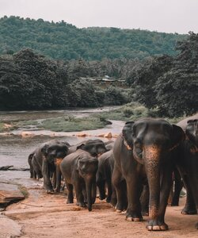
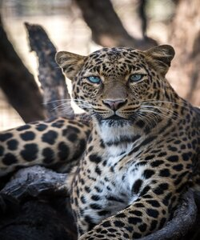
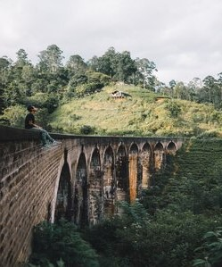
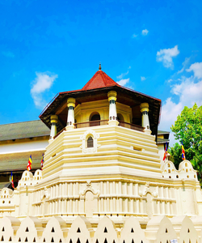

Click on the images below to get a brief describtion about each place
Copyright © 2020 SL TOURS. Page Editor: Bawantha Perera | W1761909


![The Temple of Tooth at kandy is the final location of the sacred tooth
of the lord Buddha which was brought to srilanka during the reign of king “keerthi sri
Megawarna” by prince “Dantha” and Princess “Hemamala” from the kindom of kalingu India.
It became the palladium of srilankan kings and was preciously guarded in a special shrine
built within precincts of royal palace where the capital was located. The Temple of the Tooth
Relic of Lord Buddha, sri dalada Maligawa is in the centre of the city, the highest venerated
religious place with steeped in cultural heritage attracting the highest respect of the
Buddhists as well as the other religions all over the world. The beautiful magnificent temple
was built by late king Vimaladharmasooriya 1st in 1592 AD.](Kandy.jpg)